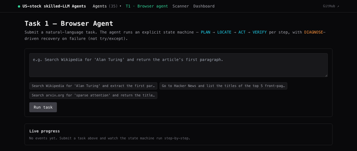
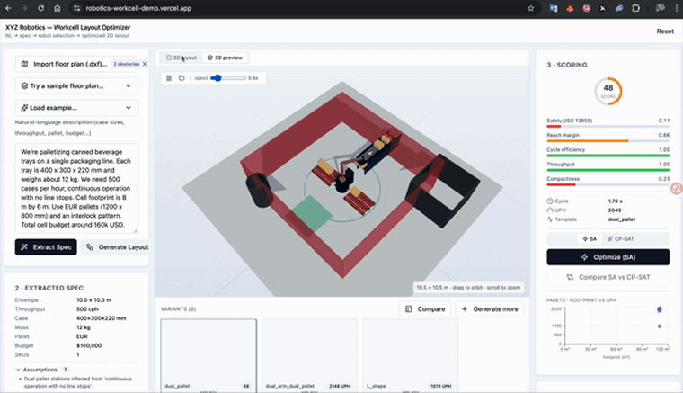
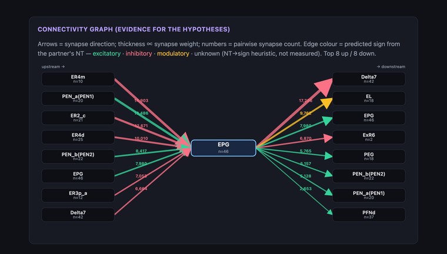
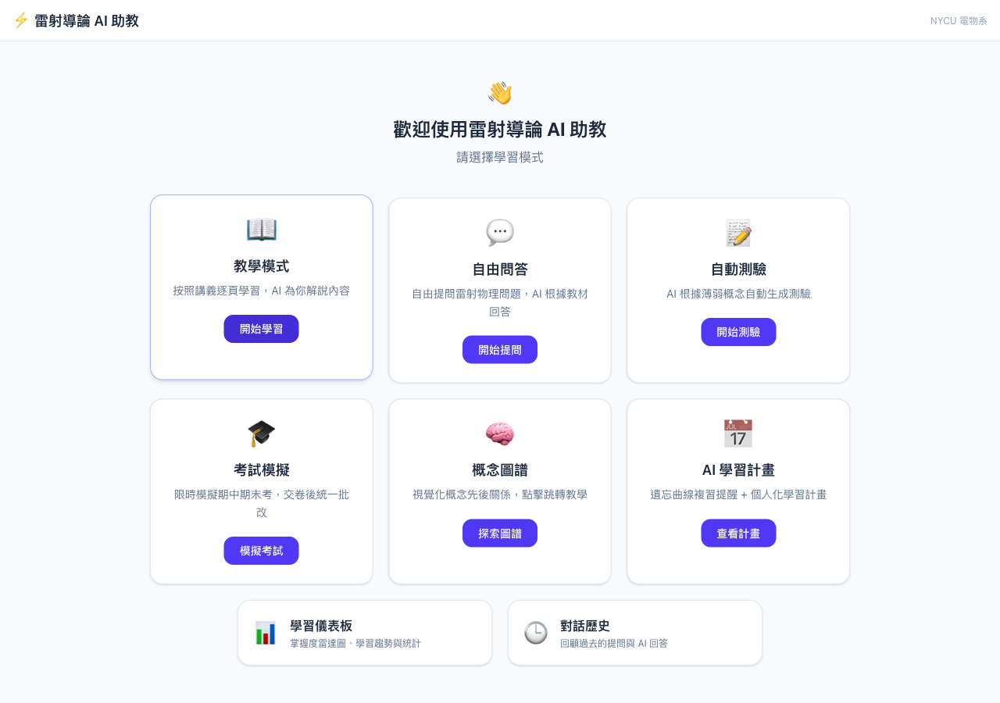
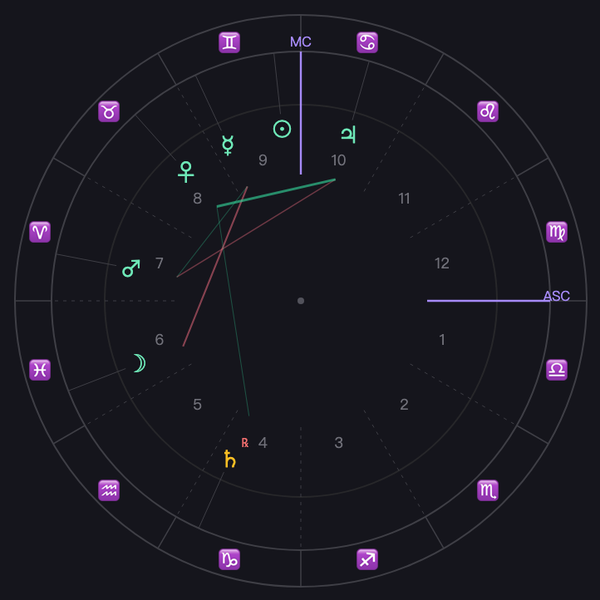
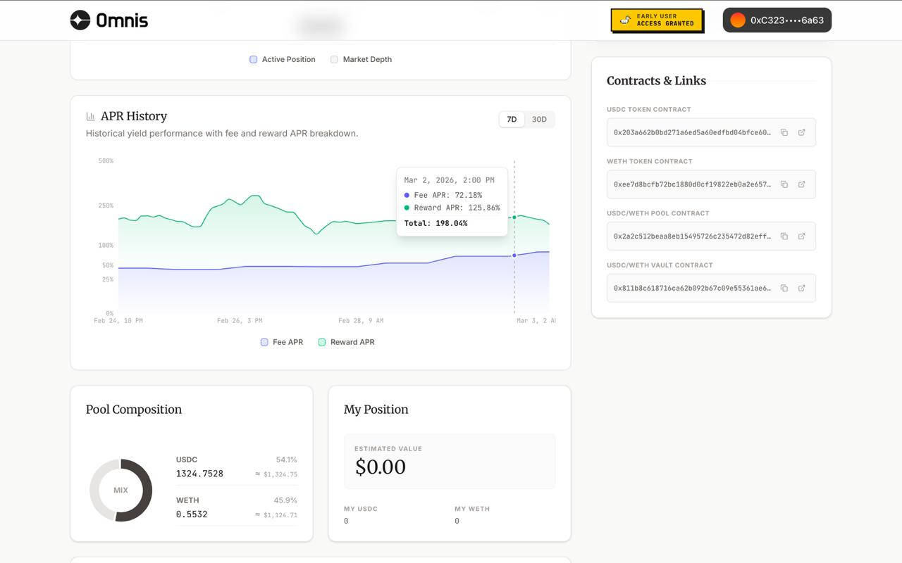

Chi-Sheng (Michael) Chen 陳麒升
Selected Work
Shippable, agentic-AI deliverables — LLM/agent systems that run in production, rank in open competition, or ship as open-source libraries — plus contract and production engineering.
Agentic AI & LLM Systems

US-Stock LLM Agent Suite (Browser Agent · SEC 10-K Extractor · Strategy Lab)
Independent · Live & deployed · 2026 — led to advisory role at VICI Holdings' WhaleForce division
A browser agent built as an explicit state machine with deterministic fault-injection recovery; a layered SEC 10-K item extractor (L1→L3 with confidence calibration); and a Strategy Lab of 22 research agents + 11 placebo controls, each with lookahead-free backtests, a per-provider cost ledger, and eval dashboards.

Robotics Workcell Layout Optimizer — LLM + CP-SAT
Independent · Live demo · 2026
Natural language → structured workcell spec → robot selection → optimized 2D layout → interactive re-optimization (Simulated Annealing + OR-Tools CP-SAT) → 3D animated preview. Multi-LLM abstraction (Claude / OpenAI / Gemini) with a validation-repair loop, cost ledger, and ISO 13855 safety separation as inviolable hard constraints.

flyhypo — Grounded Functional-Hypothesis Generator for Fly Neurons
Independent · Proof of concept · 2026
Combines connectome structure (neuPrint) with literature evidence (PubMed) and an LLM (Gemini) to generate falsifiable functional hypotheses for Drosophila cell types — every claim traced to a specific paper id or connectivity number, with verification guards (verbatim re-grep, mis-attribution, number-existence) designed to catch unsupported claims.
paper-evidence — Grounding LLM Claims in Scientific Literature
Independent · Open-source library · 2026
A verification core where a claim about a source survives only if the source verifiably supports it: a verbatim-quote gate, numbers-must-sit-next-to-their-quote, and an independent cross-family LLM judge for paraphrase/citation faithfulness — plus a literature extractor (saturation search, citation snowball, recall scoring).
MadGAA — OSCE Medical Multi-Agent Judge System
Berkeley RDI AgentX–AgentBeats · 3rd Place, Healthcare Agent track (1,300+ teams overall) · 2026
Co-built a multi-agent LLM evaluation system with role-specialized agents (examiner, patient, judge) and a verifiable scoring rubric (RAG + tool use + verifier).

NYCU General-Physics AI Tutor — RAG, live
Independent build · Serving real students · 2026
RAG tutor over University Physics Ch.1–31 (Next.js 16 + Gemini 2.5 tiered models + Supabase pgvector) with 20+ learning modes, per-IP rate limiting, daily quota, token-usage logging, a dependency-free Sentry envelope, and CI.

NYCU EP Laser-Physics AI Tutor — RAG, in production
Independent build · Serving real students · 2025–Present
End-to-end RAG tutoring system (Next.js + Gemini + Supabase pgvector) with 8 learning modes — adaptive quiz, exam simulation, knowledge graph, and spaced repetition. Deployed and used by NYCU Electrophysics students.

Bazaar of Fates — 11 Divination Engines + Bilingual AI Readings
Independent · Full-stack (FastAPI + Next.js) · 2026
Eleven traditional divination systems as deterministic Python engines (planet positions validated against Swiss Ephemeris to <0.006°) with streaming bilingual English/中文 LLM readings. Originated as placebo controls in a quant project, then rebuilt as a standalone full-stack app.
Contract & Production

Omnis Labs — AI-Driven DeFi Liquidity Protocol
Co-Founder & Lead AI/Quant Engineer · Live in production · 2024–May 2026
Automated market-maker strategies driven by time-series ML with full backtesting and MLOps (Docker, CI/CD, on-chain event pipeline, live P&L observability). Production results: 50%–120% base fee APR on WBTC/USDC and ETH/USDC pairs.
RLHF / Alignment — Contract for OpenAI (via Mercor)
Contract · Remote (US) · Mar 2025 – Oct 2025
Preference rankings and model-behavior assessments feeding SFT, DPO, and reward modeling across hard reasoning, code, tool-use, and safety-alignment prompts; drove rubric design that improved labeling consistency on ambiguous edges.
Skills
AI / ML & Deep Learning
LLMs, Agents & RAG
Quantum Machine Learning
MLOps, Cloud & Infrastructure
Quant & Finance Engineering
Programming & Systems
AI-Powered Dev Tools
Languages
Chinese (Native) · English (Fluent — working in English at Harvard/BIDMC since Nov 2024)